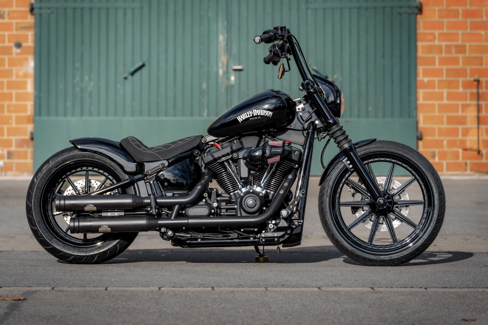
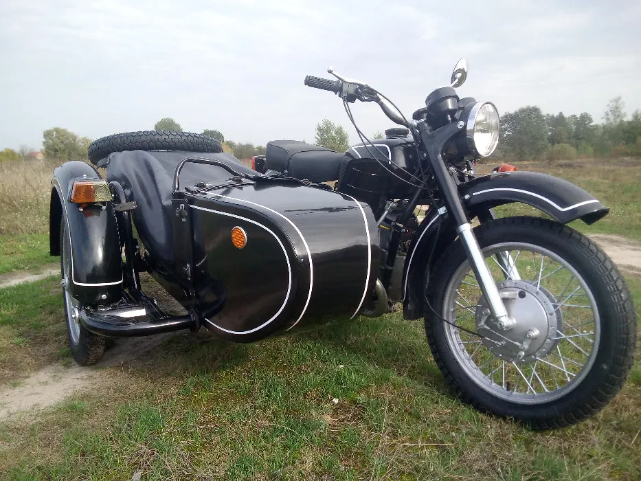
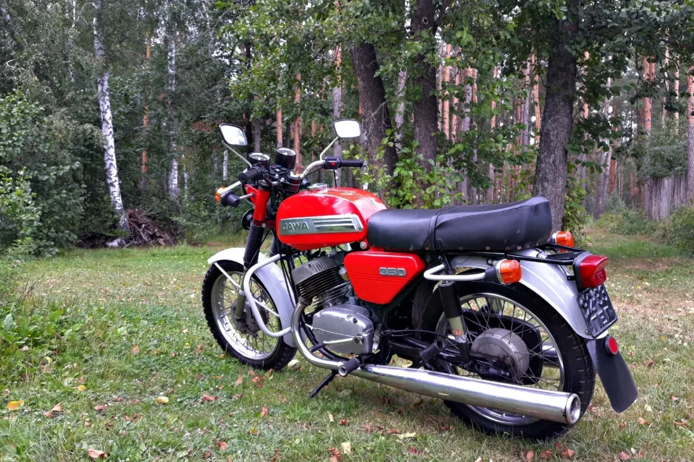

Гарлі-Девідсон
Американський виробник мотоциклів. Базується в місті Мілвокі, штат Вісконсин.
Протягом першого десятиліття 20-го століття, один з двох найбільших американських виробників мотоциклів, щоб вижити, ці компанії об'єдналися під час Великої депресії. «Harley-Davidson» також пережили період низького рівня контролю якості і конкуренції з боку японських виробників.
Після початку Першої світової війни компанія «Гарлі-Девідсон» отримала перше офіційне військове замовлення - 500 мотоциклів були замовлені для армії Великої Британії. У 1917 році Сполучені Штати вступили в Першу світову війну, і мотоцикли почала замовляти і Армія США. Всього за час війни було замовлено більше 20 000 мотоциклів «Гарлі-Девідсон» для військ.
1990 рік - дебютує модель Softail Fat Boy. Модель стала легендарною завдяки фільму «Термінатор 2: Судний день» з Арнольдом Шварценеггером у головній ролі.

Дніпро МТ

Дніпро — важкий дорожній мотоцикл з боковим візком, що випускався КМЗ — Київським мотоциклетним заводом.
Нині всі важкі мотоцикли КМЗ узагальнено називають «Дніпро», хоча перша модель, що отримала власну назву «Дніпро», К-650 з'явилася 1968 року. Рік закриття проекту - 2012.
Ява
Ява (Jawa) - марка дорожніх мотоциклів, що виготовляються в Тинець над Сазавоу (Чехословаччина) однойменним концерном. Мотоцикли Jawa були доступні у продажу на території СРСР.
Назва мотоциклів "Ява" є скороченням від імені власника фабрики Франтішека Янечека (чеш. František Janeček) та від назви фірми "Вандерер" (Wanderer), у якої підприємець купив обладнання та ліцензію на виробництво перших мотоциклів під маркою "Ява".
